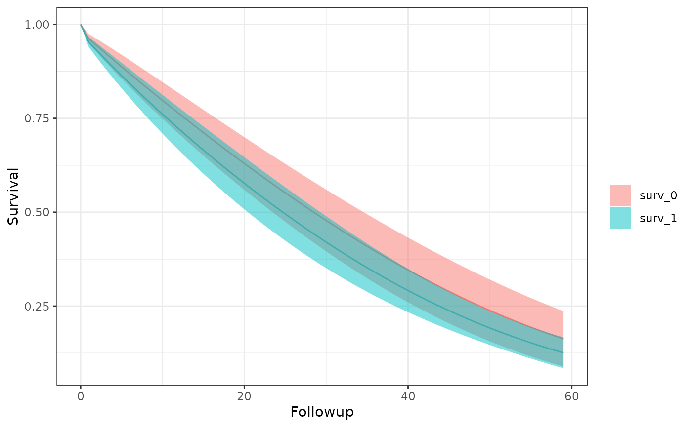

Introduction to SEQuential
SEQuential.RmdSetting up your Analysis
There are some assumptions which must be met to avoid unintended errors when using SEQuential. These are:
- User provided
time.colbegins at 0 per uniqueid.colentries, we also assume that the column contains only integers and continues by 1 for every time step. e.g. (0, 1, 2, 3, …) is allowed and (0, 1, 2, 2.5, …) or (0, 1, 2, 4, 5, …) are not. - Provided
time.colentries may be out of order as a sort is enforced at the beginning of the function, e.g. (0, 2, 1, 4, 3, …) is valid because it begins at 0 and is continuously increasing by increments of 1, even though it is not ordered. -
eligibleand column names provided to andexcused.colsare once one only one (with respect totime.col) flag variables
Step 1 - Defining your options
In your R script, you will always start by defining your options
object, through the SEQopts helper. There are many defaults
which allow you to target exactly how you would like to change your
analysis. Through this wiki there are specific pages dedicated to each
causal contrast and the parameters which affect them, but for simplicity
let’s start with an intention-to-treat analysis with 20 bootstrap
samples.
library(SEQTaRget)
options <- SEQopts(km.curves = TRUE, #asks the function to return survival and risk estimates
bootstrap = TRUE, #asks the model to preform bootstrapping
bootstrap.nboot = 10) #asks the model for 10 bootstrap samplesIn general, options will be in the form
{option}.{parameter} - here you may notice that we use
bootstrap.nboot indicating that this parameter affects the
bootstrap
Step 2 - Running the Primary Function
The next step is running the primary R function,
SEQuential. Here you will give your options, data, and
data-level information. We provide some small simulated datasets to test
on.
data <- SEQdata
model <- SEQuential(data, id.col = "ID",
time.col = "time",
eligible.col = "eligible",
treatment.col = "tx_init",
outcome.col = "outcome",
time_varying.cols = c("N", "L", "P"),
fixed.cols = "sex",
method = "ITT", options = options)
#> Non-required columns provided, pruning for efficiency
#> Pruned
#> Expanding Data...
#> Expansion Successful
#> Moving forward with ITT analysis
#> Bootstrapping with 80 % of data 10 times
#> ITT model created successfully
#> Creating Survival curves
#> Scale for colour is already present.
#> Adding another scale for colour, which will replace the existing scale.
#> CompletedSEQuential is a rather chunky algorithm and will take
some time to run, especially when bootstrapping. We provide some print
statements to help track where the function is processing at any given
point in time.
Step 3 - Recovering your results
SEQuential produces a lot of internal diagnostics,
models, and dataframes out of its main function in an S4 class. We
provide a few different methods to handle obtaining your results.
outcome(model) # Returns a list of only the outcome models
#> [[1]]
#> [[1]][[1]]
#>
#> Call:
#> fastglm.default(x = X, y = y, family = quasibinomial(), method = params@fastglm.method)
#>
#> Coefficients:
#> (Intercept) tx_init_bas1 followup
#> -6.85931555 0.22530938 0.03538172
#> followup_sq trial trial_sq
#> -0.00015987 0.04471790 0.00057617
#> sex1 N_bas L_bas
#> 0.12704583 0.00328671 -0.01385088
#> P_bas tx_init_bas1:followup
#> 0.20092890 -0.00170402
#>
#> [[1]][[2]]
#>
#> Call:
#> fastglm.default(x = X, y = y, family = quasibinomial(), method = params@fastglm.method)
#>
#> Coefficients:
#> (Intercept) tx_init_bas1 followup
#> -5.70666923 0.13330124 0.03787358
#> followup_sq trial trial_sq
#> -0.00035674 0.02644011 0.00086039
#> sex1 N_bas L_bas
#> 0.36001344 0.00145292 -0.19058426
#> P_bas tx_init_bas1:followup
#> 0.11295147 -0.00267922
#>
#> [[1]][[3]]
#>
#> Call:
#> fastglm.default(x = X, y = y, family = quasibinomial(), method = params@fastglm.method)
#>
#> Coefficients:
#> (Intercept) tx_init_bas1 followup
#> -9.1712e+00 2.2831e-01 5.4841e-02
#> followup_sq trial trial_sq
#> -4.0688e-04 1.0570e-01 -4.0883e-05
#> sex1 N_bas L_bas
#> -4.2007e-02 2.0687e-03 -5.2355e-02
#> P_bas tx_init_bas1:followup
#> 4.1592e-01 -4.5406e-03
#>
#> [[1]][[4]]
#>
#> Call:
#> fastglm.default(x = X, y = y, family = quasibinomial(), method = params@fastglm.method)
#>
#> Coefficients:
#> (Intercept) tx_init_bas1 followup
#> -1.2717e+01 1.4785e-01 2.7985e-02
#> followup_sq trial trial_sq
#> -5.0107e-05 1.5879e-01 -1.2503e-04
#> sex1 N_bas L_bas
#> 1.7735e-01 1.9286e-03 -8.5079e-02
#> P_bas tx_init_bas1:followup
#> 8.3786e-01 5.3018e-03
#>
#> [[1]][[5]]
#>
#> Call:
#> fastglm.default(x = X, y = y, family = quasibinomial(), method = params@fastglm.method)
#>
#> Coefficients:
#> (Intercept) tx_init_bas1 followup
#> -4.12618796 0.31433497 0.04437797
#> followup_sq trial trial_sq
#> -0.00016160 -0.00266764 0.00077599
#> sex1 N_bas L_bas
#> 0.18135760 0.00240254 0.06506529
#> P_bas tx_init_bas1:followup
#> -0.09583373 -0.00892581
#>
#> [[1]][[6]]
#>
#> Call:
#> fastglm.default(x = X, y = y, family = quasibinomial(), method = params@fastglm.method)
#>
#> Coefficients:
#> (Intercept) tx_init_bas1 followup
#> -4.6104e+00 -2.5621e-02 3.1344e-02
#> followup_sq trial trial_sq
#> -6.0884e-05 1.8695e-04 9.5960e-04
#> sex1 N_bas L_bas
#> 1.9846e-01 3.8789e-03 -5.5887e-04
#> P_bas tx_init_bas1:followup
#> -5.6365e-02 8.0484e-03
#>
#> [[1]][[7]]
#>
#> Call:
#> fastglm.default(x = X, y = y, family = quasibinomial(), method = params@fastglm.method)
#>
#> Coefficients:
#> (Intercept) tx_init_bas1 followup
#> -1.4647e+01 -7.5208e-03 4.9683e-02
#> followup_sq trial trial_sq
#> -2.5384e-04 2.0944e-01 -6.0223e-04
#> sex1 N_bas L_bas
#> -3.2339e-02 6.3060e-03 -8.7478e-03
#> P_bas tx_init_bas1:followup
#> 9.8581e-01 -6.3076e-04
#>
#> [[1]][[8]]
#>
#> Call:
#> fastglm.default(x = X, y = y, family = quasibinomial(), method = params@fastglm.method)
#>
#> Coefficients:
#> (Intercept) tx_init_bas1 followup
#> -9.39071557 0.20227298 0.02731706
#> followup_sq trial trial_sq
#> -0.00012328 0.09938015 0.00014525
#> sex1 N_bas L_bas
#> -0.12188854 -0.00027847 -0.04695586
#> P_bas tx_init_bas1:followup
#> 0.51985467 -0.00103007
#>
#> [[1]][[9]]
#>
#> Call:
#> fastglm.default(x = X, y = y, family = quasibinomial(), method = params@fastglm.method)
#>
#> Coefficients:
#> (Intercept) tx_init_bas1 followup
#> 2.5837e+00 1.0534e-01 3.2412e-02
#> followup_sq trial trial_sq
#> -2.6869e-05 -1.2370e-01 1.6482e-03
#> sex1 N_bas L_bas
#> -1.3761e-01 -1.8333e-04 -4.8060e-03
#> P_bas tx_init_bas1:followup
#> -7.7720e-01 1.5539e-04
#>
#> [[1]][[10]]
#>
#> Call:
#> fastglm.default(x = X, y = y, family = quasibinomial(), method = params@fastglm.method)
#>
#> Coefficients:
#> (Intercept) tx_init_bas1 followup
#> -7.43904169 0.41483864 0.03157776
#> followup_sq trial trial_sq
#> -0.00012752 0.05300735 0.00039862
#> sex1 N_bas L_bas
#> 0.30994058 0.00253962 -0.03247561
#> P_bas tx_init_bas1:followup
#> 0.24637872 -0.00390270
#>
#> [[1]][[11]]
#>
#> Call:
#> fastglm.default(x = X, y = y, family = quasibinomial(), method = params@fastglm.method)
#>
#> Coefficients:
#> (Intercept) tx_init_bas1 followup
#> -1.3729e+01 4.3212e-01 4.9985e-02
#> followup_sq trial trial_sq
#> -4.0294e-04 1.7345e-01 -2.2957e-04
#> sex1 N_bas L_bas
#> 2.8150e-01 1.8517e-03 -6.0796e-02
#> P_bas tx_init_bas1:followup
#> 9.0134e-01 -5.5006e-03
km_curve(model) # Prints the survival curve
#> Scale for colour is already present.
#> Adding another scale for colour, which will replace the existing scale.
#> [[1]]
risk_data(model)
#> [[1]]
#> Method A Risk 95% LCI 95% UCI SE
#> <char> <char> <num> <num> <num> <num>
#> 1: ITT 0 0.8372582 0.7636821 0.9108343 0.03753953
#> 2: ITT 1 0.8744359 0.8332613 0.9156104 0.02100781
risk_comparison(model)
#> [[1]]
#> A_x A_y Risk Ratio RR 95% LCI RR 95% UCI Risk Differerence RD 95% LCI
#> <fctr> <fctr> <num> <num> <num> <num> <num>
#> 1: risk_0 risk_1 1.0444041 0.9453016 1.153896 0.03717768 -0.04713597
#> 2: risk_1 risk_0 0.9574838 0.8666291 1.057863 -0.03717768 -0.12149133
#> RD 95% UCI
#> <num>
#> 1: 0.12149133
#> 2: 0.04713597